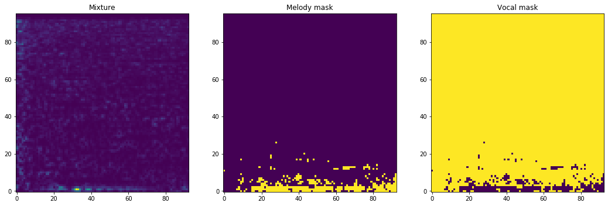

Preparation¶
In this example, we prepare training/validation data for melody/vocal separation task.
Before running bunch of codes below, please download DSD100 dataset from the DSD100 download page and say it DSD100.zip.
Initializing AudioMixer¶
[1]:
%%capture
from chimeranet.audio_mixer import AudioMixer
from chimeranet.dataset_loader.dsd100\
import DSD100MelodyLoader, DSD100VocalLoader
am = AudioMixer()
am.add_loader(
DSD100MelodyLoader('DSD100.zip'),
a_time = (-1, 1), # data augmentation on time axis
a_freq = (-1, 1), # data augmentation on frequency axis
a_amp = (-5, 5), # data augmentation on signal power
).add_loader(
DSD100VocalLoader('DSD100.zip'),
a_time = (-1, 1),
a_freq = (-1, 1),
a_amp = (-5, 5),
)
Mix audio and make training data¶
[2]:
%%capture
from chimeranet.preprocessing import to_mixture, to_true_pair
time, sr = 0.75, 16000
n_fft, hop_length, n_mels = 512, 128, 96
am.time(time).sr(sr).n_fft(n_fft).hop_length(hop_length).n_mels(n_mels)
sample_size = 8
specs_train = am.make_specs(sample_size, n_jobs=4) # mix on 4 processes
x_train = to_mixture(specs_train)
y_train = to_true_pair(specs_train)
Showing one of the training data¶
[3]:
%matplotlib inline
import matplotlib.pyplot as plt
# sample_size x time_frames x n_mels
print(x_train.shape)
# sample_size x time_frames x n_mels x n_channels (n_channels+1)
print(y_train['embedding'].shape, y_train['mask'].shape)
idx = 7
mask_x = x_train[idx].transpose((1, 0))
mask_y1, mask_y2 = y_train['embedding'][idx].transpose((2, 1, 0))
fig = plt.figure(figsize=(18, 6))
ax1 = fig.add_subplot(131)
ax1.title.set_text('Mixture')
ax1.imshow(mask_x, origin='lower')
ax2 = fig.add_subplot(132)
ax2.title.set_text('Melody mask')
ax2.imshow(mask_y1, origin='lower', vmin=0, vmax=1)
ax3 = fig.add_subplot(133)
ax3.title.set_text('Vocal mask')
ax3.imshow(mask_y2, origin='lower', vmin=0, vmax=1)
(8, 93, 96)
(8, 93, 96, 2) (8, 93, 96, 3)
[3]:
<matplotlib.image.AxesImage at 0x4d05a39f60>

Validation data¶
Like training data, validation data can be made in almost same way.
[4]:
%%capture
am_val = AudioMixer()
am_val.add_loader(
DSD100MelodyLoader('DSD100.zip', test=True)
).add_loader(
DSD100VocalLoader('DSD100.zip', test=True)
)
am_val.time(time).n_mels(n_mels).sr(sr).n_fft(n_fft).hop_length(hop_length)
specs_validation = am_val.make_specs(sample_size, n_jobs=4)
x_validation = to_mixture(specs_validation)
y_validation = to_true_pair(specs_validation)
Saving¶
[5]:
import h5py
with h5py.File('example-dataset.h5', 'w') as f:
f.create_dataset('x_train', data=x_train)
f.create_dataset('y_train_embedding', data=y_train['embedding'])
f.create_dataset('y_train_mask', data=y_train['mask'])
f.create_dataset('x_validation', data=x_validation)
f.create_dataset('y_validation_embedding', data=y_validation['embedding'])
f.create_dataset('y_validation_mask', data=y_validation['mask'])
[1] A. Liutkus et al., “The 2016 Signal Separation Evaluation Campaign,” in Latent Variable Analysis and Signal Separation - 12th International Conference, {LVA/ICA} 2015, Liberec, Czech Republic, August 25-28, 2015, Proceedings, 2017, pp. 323–332.